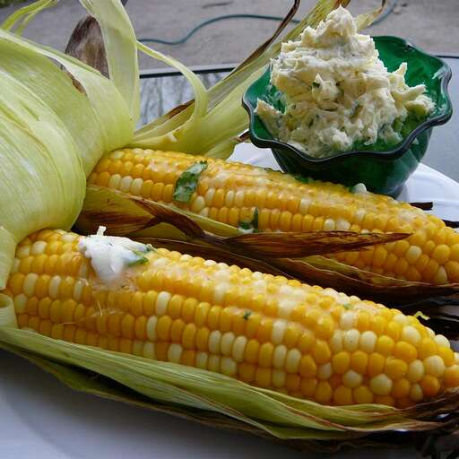

Grilled Corn

Grilled Corn with Cilatro Lime Butter
This is the only way I like to eat corn on the cob now! It adds so much flavor!
Family LOVED the cilantro lime butter for this recipe!
Ingredients
- 1 cup butter
- 1/4 cup chopped fresh cilantro
- 1 and 1/2 tablespoons fresh lime juice
- 1 pinch cayenne pepper
- 8 ears corn on the cob, unhusked
- 3 quarts cold water, or as needed to cover
Steps
- Cream butter in a bowl until smooth; mix in cilantro, lime juice, and cayenne pepper until thoroughly combined. Cover and refrigerate 1 hour to blend flavors.
- Peel husks back from ears of corn starting at the top, leaving the husks attached at the bottom of the ears. Remove all the corn silk and close husks over the ears again. Cover corn ears with cold water in a large bowl until husks are thoroughly soaked, about 20 minutes.
- Preheat grill for medium heat and lightly oil the grate.
- Place the corn in husks onto the hot grate and grill covered until husks are charred and the corn kernels are tender, 20 to 25 minutes, turning often. Strip off husks and serve corn with cilantro lime butter.